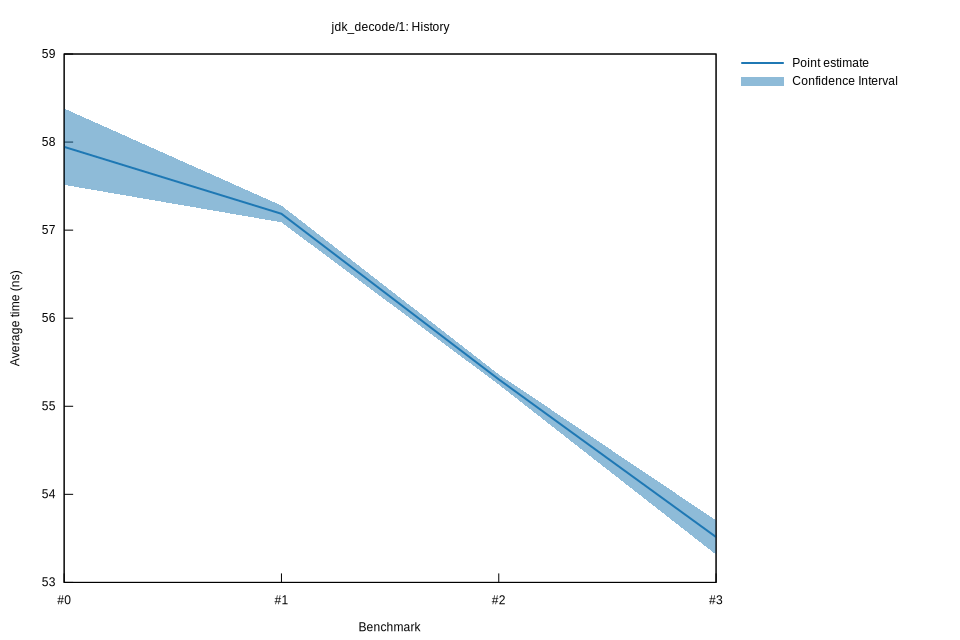

# 32022-10-16T20:11:45+03:00
|
Lower Bound |
Estimate |
Upper Bound |
| Value: |
53.32ns |
53.51ns |
53.70ns |
| Throughput: |
71.55MiB/s |
71.28MiB/s |
71.03MiB/s |
| Change in Value: |
-3.2179% |
-2.6985% |
-2.1068% |
| Change in Throughput: |
+3.3249% |
+2.7734% |
+2.1521% |
No change in performance detected.
# 22022-10-16T17:30:48+03:00
|
Lower Bound |
Estimate |
Upper Bound |
| Value: |
55.25ns |
55.31ns |
55.36ns |
| Throughput: |
69.05MiB/s |
68.98MiB/s |
68.90MiB/s |
| Change in Value: |
-3.6009% |
-3.3886% |
-3.1900% |
| Change in Throughput: |
+3.7354% |
+3.5075% |
+3.2952% |
No change in performance detected.
# 12022-10-15T17:21:30+03:00
|
Lower Bound |
Estimate |
Upper Bound |
| Value: |
57.09ns |
57.19ns |
57.28ns |
| Throughput: |
66.82MiB/s |
66.71MiB/s |
66.60MiB/s |
| Change in Value: |
-1.0198% |
-0.4948% |
+0.0143% |
| Change in Throughput: |
+1.0303% |
+0.4973% |
-0.0143% |
Change within noise threshold.
# 02022-10-15T16:55:42+03:00
|
Lower Bound |
Estimate |
Upper Bound |
| Value: |
57.51ns |
57.95ns |
58.38ns |
| Throughput: |
66.33MiB/s |
65.83MiB/s |
65.34MiB/s |